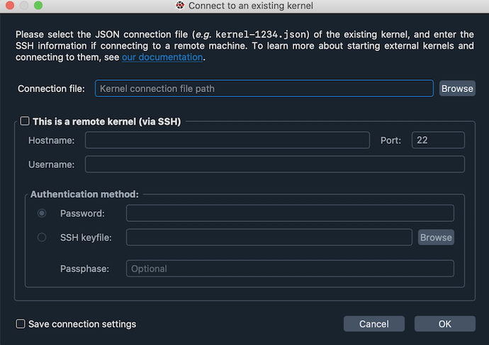
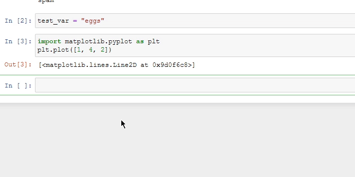
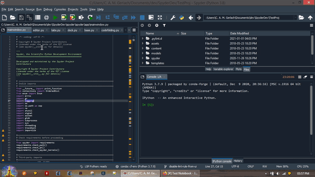
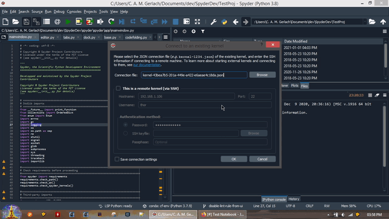
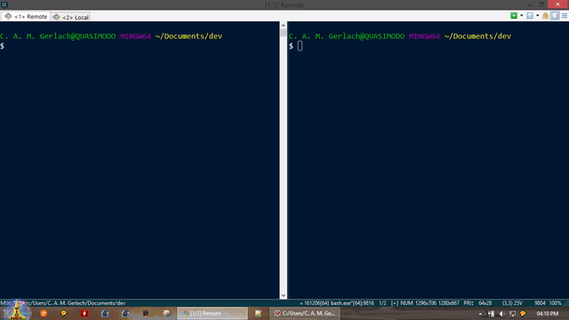
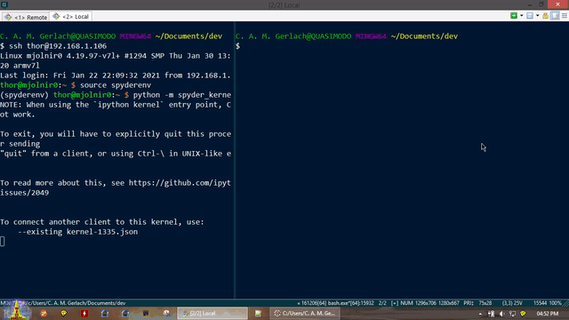
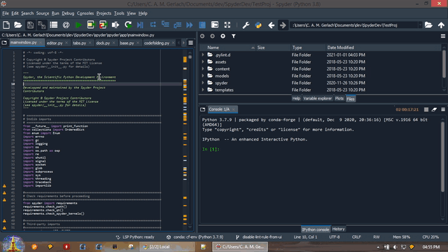
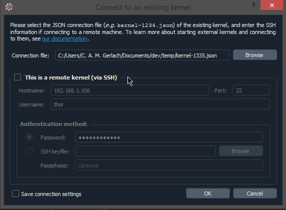
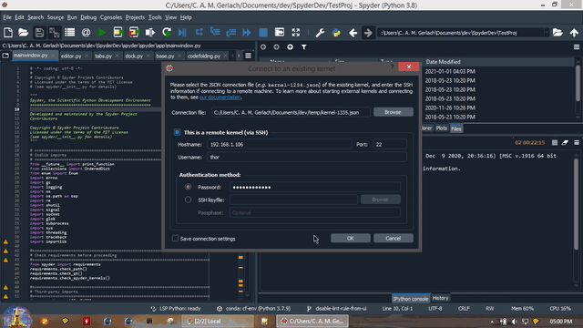

Remote Connection Manager#
The Remote Connections Manager allows you to create, initiate and manage connections to external servers as well as local containers and VMs for remote development and execution of your code. Connecting to a remote host and opening a new IPython Console on it allows running code, browsing files and using other Spyder features just as if you were working on your local machine.
It uses the standard, widely-used SSH protocol, which allows you to create a secure connection to remote servers, cloud resources and high-performance computing clusters, as well as local Docker containers, virtual machines (including Windows Subsystem for Linux v2), and headless devices such as the Raspberry Pi. Additionally, it supports connecting to JupyterHub servers run by your company, institution or organization and using their shared Jupyter Server environments, without the limitations of the traditional notebook interface. No configuration is required on the remote host, aside from ensuring an SSH or JupyterHub server is running and accessible.
The remote connections manager can be accessed under , and you can use to open new consoles on remote servers you’ve already configured.
Creating a new connection#
To set up a connection to a new remote server, open the remote connections manager and click New connection. You can then configure the settings appropriate to the connection method.
If your institution already has a JupyterHub server you’d like to connect to, select the JupyterHub tab. Otherwise, if you want to connect to most other types of hosts, you’ll want to use the default SSH. Either way, you’ll just need to make sure JupyterHub or SSH is available on the remote machine, and you have the appropriate credentials to connect to it.
SSH connection#
To create a new SSH connection, you need to enter several key details:
Select your authentication method, Password or Key file.
Note
Password uses your normal username and password that you would enter when logging in to your account on the machine, while Key file uses a SSH private key you’ve generated with ssh-keygen and already registered with the remote machine. If you’re unsure, try Password to start, or ask the person who set up the host you are trying to connect to.
Type a Name for the connection, which is just used to identify it in within the Spyder interface.
Enter the IP address or hostname of the device to connect to in Remote address or host
If you or your administrator has configured different SSH port than the default
22on the remote machine (the port the SSH daemon,sshd, is listening on), enter it in the Port field.Type the Username of the account you want to connect to.
If using a Password, enter it in the corresponding field. If using a Key file, navigate to where it is located (often under
YOUR_HOME_DIR/.ssh/and calledid_rsaor similar) and enter its passphrase, if you’ve set one.Finally, you can optionally set the path to a SSH configuration file, which can contain additional advanced options for the host you set above as well as filling in default values for the previous fields.
Finally, click Connect to initiate the connection to the host, which will automatically validate and securely save all the provided details and autonomously set up the server Spyder needs to connect to on the remote host, so everything is ready for you to launch your first console.
Alternatively, you can click Save to store the details you’ve entered in a new connection without actually trying to connect.
JupyterHub connection#
If connecting to a existing JupyterHub server, the process is much simpler than SSH. Just enter what you would like to Name the connection in the Spyder interface, the Server URL to the JupyterHub server to connect to, and the access Token you were provided. Then, click Connect to connect to the server and save the provided details for future use. If you have questions about how to obtain a token, ask the person who set up the JupyterHub server or your system administrator.
Tip
To enable all of Spyder’s features when working with an existing JupyterHub deployment, ask the person who set up the server to install the Spyder-Remote-Services Jupyter Server extension.
Manage an existing connection#
You can view the remote connections you’ve already created by browsing and selecting them from the left panel of the remote connections manager. The Connection status tab shows basic details of the connection, its current state, a log of connection events and any errors to help troubleshoot problems. Under the Connection info tab, you can update any of the details you entered when Creating a new connection, using the Save button at the bottom to save your changes. Use the Connect button to initiate the selected connection, or the Remove button to delete it.
Connecting to existing kernels (advanced)#
Caution
This is an advanced feature for connecting to existing running kernels, which is substantially more complicated and less capable than creating and managing a connection with Spyder using the Remote Connections Manager. If possible, we recommend using the latter instead unless your use case requires it.
You can connect to external local and remote kernels (including those managed by Jupyter Notebook or QtConsole) through the Connect to an existing kernel dialog under the Consoles menu.
For this feature to work, a compatible version of the spyder-kernels package must be installed in the environment or machine in which the external kernel is running.

Connect to a local kernel#
To connect to a local kernel that is already running (e.g. one started by Jupyter notebook),
Run
%connect_infoin the notebook or console you want to connect to, and copy the name of its kernel connection file, shown afterjupyter <app> --existing.
In Spyder, click Connect to an existing kernel from the Consoles menu, and paste the name of the Connection file from the previous step.
As a convenience, kernel ID numbers (e.g.
1234) entered in the connection file path field will be expanded to the full path of the file, i.e.jupyter/runtime/dir/path/kernal-id.json.
Click OK to connect to the kernel.

Connect to a remote kernel#
To connect to a kernel on a remote machine,
Launch a Spyder kernel on the remote host if one is not already running, with
python -m spyder_kernels.console.
Copy the kernel’s connection file (
jupyter/runtime/dir/path/kernel-pid.json) to the machine you’re running Spyder on.You can get
jupyter/runtime/dir/pathby executingjupyter --runtime-dirin the same Python environment as the kernel. Usually, the connection file you are looking for will be one of the newest in this directory, corresponding to the time you started the external kernel.
Click Connect to an existing kernel from the Consoles menu, and browse for or enter the path to the connection file from the previous step.
As a convenience, kernel ID numbers (e.g.
1234) entered in the connection file path field will be expanded tojupyter/runtime/dir/path/kernal-id.jsonon your local machine, if you’ve copied the connection file there.
Check the This is a remote kernel (via SSH) box and enter the Hostname or IP address, username and port to connect to on the remote machine. Then, enter either
username’s password on the remote machine, or browse to an SSH keyfile (typically in the.sshdirectory in your home folder on the local machine, often calledid_rsaor similar) registered on it; only one is needed to connect. If you check Save connection settings, these details will be remembered and filled for you automatically next time you open the dialog.Note that Port is the port number on your remote machine that the SSH daemon (
sshd) is listening on, typically22unless you or your administrator has configured it otherwise.
Click OK to connect to the remote kernel

For more technical details about connecting to remote kernels, see the Connecting to a remote kernel page in the IPython Cookbook.